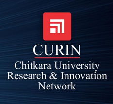

We Make IT Happen
Research • Learn • Do
It is one of the goals of Chitkara University (CU) to improve its research performance by building a critical mass of researchers who will develop a distinctive portfolio of high-quality discovery, and applied and commercial research. The University is in the process of building a vibrant research culture for fostering outstanding research programs in areas relevant to our future. As a student, you will be taught by leading researchers and will be exposed to leading-edge research and technology.
Both the faculty and doctoral scholars actively involve themselves in research projects. Interdisciplinary research, a system-level approach, and close ties to industry combine to yield up-to-date research. Strong ties with industry complement these top-notch research opportunities. Through research centre–industry liaison programs and departmental advisory boards, faculty and students work towards future technologies. A lot of our research initiatives are under the funding consideration from DST and other related agencies. The students and faculty take part in national/international conferences as well as workshops and seminars in their areas of interest. Faculty members are constantly involved in research publications and quality improvements programs. This approach helps the faculty in taking the students’ imagination beyond classrooms teaching to actual scientific exploration.

Chitkara University is known for its multidisciplinary research. Researchers, staff and students work across disciplines to extend the boundaries of knowledge. At CURIN various research centres build and sustain Chitkara University’s locus of research for collaborative groups of investigators pushing the frontiers of knowledge forward.